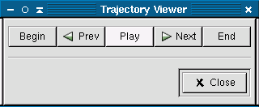

Once your have created a trajectory file with the Molecular Dynamics feature you may view the trajectory file it produced using the MD Trajectory viewer. To start the viewer, select MD Trajectory Viewer from the popup menu This will open a file selection dialog. Select the trajectory file you want to view in this box and then click on Ok. Make sure the trajectory file was produced using the same molecule, otherwise Ghemical will close.
A dialog box titled Trajectory Viewer should appear. The buttons in this box control which step of the simulation is shown in the graphics window of Ghemical. The begin button rewinds the simulation back to the first step. The Prev button displays the previous step in the simulation. The Next button advances to the next step. The Play button displays every frame in the simulation from the beginning to the end. The End button advances to the last frame in the simulation.
When you are done viewing the trajectory click the Close button to close the dialog box. While the trajectory viewer is open you will not be able to make changes on the main Ghemical window, so you should orient the molecule to the perspective that you want to view it at before you open the viewer.